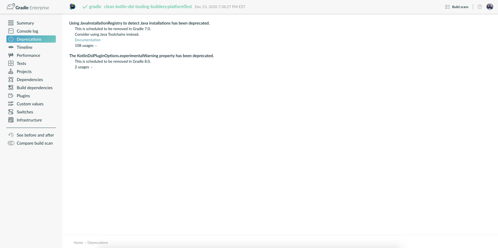

Upgrading your build from Gradle 8.x to the latest
- Upgrading from 8.13 and earlier
- Upgrading from 8.12 and earlier
- Upgrading from 8.11 and earlier
- Upgrading from 8.10 and earlier
- Upgrading from 8.9 and earlier
- Upgrading from 8.8 and earlier
- Upgrading from 8.7 and earlier
- Upgrading from 8.6 and earlier
- Upgrading from 8.5 and earlier
- Upgrading from 8.4 and earlier
- Upgrading from 8.3 and earlier
- Upgrading from 8.2 and earlier
- Upgrading from 8.1 and earlier
- Upgrading from 8.0 and earlier
This chapter provides the information you need to migrate your Gradle 8.x builds to the latest Gradle release. For migrating from Gradle 4.x, 5.x, 6.x, or 7.x, see the older migration guide first.
We recommend the following steps for all users:
-
Try running
gradle help --scanand view the deprecations view of the generated build scan.
This lets you see any deprecation warnings that apply to your build.
Alternatively, you can run
gradle help --warning-mode=allto see the deprecations in the console, though it may not report as much detailed information. -
Update your plugins.
Some plugins will break with this new version of Gradle because they use internal APIs that have been removed or changed. The previous step will help you identify potential problems by issuing deprecation warnings when a plugin tries to use a deprecated part of the API.
-
Run
gradle wrapper --gradle-version 8.14.4to update the project to 8.14.4. -
Try to run the project and debug any errors using the Troubleshooting Guide.
Upgrading from 8.13 and earlier
Potential breaking changes
The Gradle Wrapper is now an executable JAR
The Gradle Wrapper JAR has been converted into an executable JAR.
This means it now includes a Main-Class attribute, allowing it to be launched using the -jar option instead of specifying a classpath and main class manually.
When you update the wrapper scripts using the gradle wrapper or ./gradlew wrapper command, the wrapper JAR will be updated automatically to reflect this change.
Changes to Settings defaults
The incubating Settings.getDefaults() method, introduced in Gradle 8.10, has been removed.
Use the Settings.defaults(Action<SharedModelDefaults>) method instead, which accepts a lambda.
This change allows default values to be interpreted in the context of individual projects rather than at the Settings level.
Upgrade to Guava 33.4.6
Guava has been updated from version 32.1.2 to 33.4.6.
This release deprecates several core features, including Charsets.
For full details, see the Guava release notes.
EclipseClasspath.baseSourceOutputDir is now a DirectoryProperty
The incubating EclipseClasspath.baseSourceOutputDir was previously declared as a Property<File>.
It has now been correctly updated to a DirectoryProperty to reflect the intended type.
Upgrade to Groovy 3.0.25
Groovy has been updated to Groovy 3.0.25.
Since the previous version was 3.0.22, this includes changes for Groovy 3.0.24 and Groovy 3.0.23 as well.
Upgrade to JaCoCo 0.8.13
JaCoCo has been updated to 0.8.13.
Upgrade to ASM 9.8
ASM was upgraded from 9.7.1 to 9.8.
Deprecations
Looking up attributes using null keys is deprecated
Passing null to getAttribute(Attribute) is now explicitly deprecated.
Previously, this would silently return null.
Now, a deprecation warning is emitted.
There should be no need to perform lookups with null keys in an AttributeContainer.
Groovy string-to-enum coercion for Property types is deprecated
Groovy supports string-to-enum coercion.
Assigning a String to a Property<T> where T is an enum is now deprecated.
This will become an error in Gradle 10.0.
This deprecation only affects plugins written in Groovy using the Groovy DSL.
Groovydoc.getAntGroovydoc() and org.gradle.api.internal.tasks.AntGroovydoc have been deprecated
These internal APIs were inadvertently exposed and are now deprecated. They will be removed in Gradle 9.0.
Deprecated methods in GradlePluginDevelopmentExtension
The constructor for GradlePluginDevelopmentExtension and its pluginSourceSet method are now deprecated.
These methods should not be used directly, they are intended to be configured solely by the Gradle Plugin Development plugin. Only the main source set is supported for plugin development.
These methods will be removed in Gradle 9.0.
Deprecated collections in IdeaModule now emit warnings
The testResourcesDirs and testSourcesDirs properties in org.gradle.plugins.ide.idea.model.IdeaModule were marked @Deprecated in Gradle 7.6, but no warnings were emitted until now.
Gradle now emits deprecation warnings when these properties are used. They will be removed in Gradle 9.0.
The ForkOptions.getJavaHome() and ForkOptions.setJavaHome() methods are no longer deprecated
These methods were deprecated in Gradle 8.11, but are no longer deprecated, as they do not yet have stable replacements.
Deprecated StartParameter.isConfigurationCacheRequested now emits warnings
The isConfigurationCacheRequested property in StartParameter was marked @Deprecated in Gradle 8.5, but no warnings were emitted until now.
Gradle now emits deprecation warnings when this property is used. It will be removed in Gradle 10.0.
Since Gradle 8.5, the same information can be obtained via the BuildFeatures service using configurationCache.requested property.
Deprecated configuration usages are no longer deprecated
Starting in 8.0, adding an artifact to a configuration that is neither resolvable nor consumable was deprecated. This deprecation was overly broad and also captured certain valid usages. It has been removed in Gradle 8.14.
Upgrading from 8.12 and earlier
Potential breaking changes
Changes to JvmTestSuite
The testType property was removed from JvmTestSuite and both the TestSuiteTargetName and TestSuiteType attributes have been removed.
Test reports and JaCoCo reports can now be aggregated between projects by specifying the name of the test suite in the target project to aggregate.
See below for additional details.
Changes to Test Report Aggregation and Jacoco Aggregation
Several changes have been made to the incubating Test Report Aggregation and JaCoCo Report Aggregation plugins.
The plugins now create a single test results variant for each test suite, containing all test results for the entire suite, instead of one variant for each test target. This change allows the aggregation plugins to aggregate test suites with multiple targets, where previously this would result in an ambiguous variant selection error.
In the future, as we continue to develop these plugins, we plan to once again create one results variant per test suite target, allowing test results from certain targets to be explicitly aggregated.
The testType property on JacocoCoverageReport and AggregateTestReport has been removed and replaced with a new testSuiteName property:
Previously:
reporting {
reports {
val testCodeCoverageReport by creating(JacocoCoverageReport::class) {
testType = TestSuiteType.UNIT_TEST
}
}
}Now:
reporting {
reports {
val testCodeCoverageReport by creating(JacocoCoverageReport::class) {
testSuiteName = "test"
}
}
}Changed behavior when calling BuildLauncher.addJvmArguments
Issue (#31426) was fixed, that caused BuildLauncher.addJvmArguments to override flags coming from the org.gradle.jvmargs system property.
Please ensure that you are not relying on this behavior when upgrading to Gradle 8.13.
If system properties needs to be overridden, BuildLauncher.setJvmArguments should be used instead.
val buildLauncher: BuildLauncher = connector.connect().newBuild()
buildLauncher.setJvmArguments("-Xmx2048m", "-Dmy.custom.property=value")Upgrade to ASM 9.7.1
ASM was upgraded from 9.6 to 9.7.1 to ensure earlier compatibility for Java 24.
Source level deprecation of Project.task methods
Eager task creation methods on the Project interface have been marked @Deprecated and will generate compiler and IDE warnings when used in build scripts or plugin code.
There is not yet a Gradle deprecation warning emitted for their use.
However, if the build is configured to fail on warnings during Kotlin script or plugin code compilation, this change may cause the build to fail.
A standard Gradle deprecation warning will be printed upon use when these methods are fully deprecated in a future version.
Deprecations
Recursively querying AttributeContainer in lazy provider
In Gradle 9.0, querying the contents of an AttributeContainer from within an attribute value provider of the same container will become an error.
The following example showcases the forbidden behavior:
AttributeContainer container = getAttributeContainer();
Attribute<String> firstAttribute = Attribute.of("first", String.class);
Attribute<String> secondAttribute = Attribute.of("second", String.class);
container.attributeProvider(firstAttribute, project.getProviders().provider(() -> {
// Querying the contents of the container within an attribute value provider
// will become an error.
container.getAttribute(secondAttribute);
return "first";
}));Deprecated org.gradle.api.artifacts.transform.VariantTransformConfigurationException
There is no good public use case for this exception, and it is not intended to be thrown by users.
It will be replaced by org.gradle.api.internal.artifacts.transform.VariantTransformConfigurationException for internal use only in Gradle 9.0.
Deprecated properties in the incubating UpdateDaemonJvm
The following properties of UpdateDaemonJvm are now deprecated:
-
jvmVersion -
jvmVendor
They are replaced by languageVersion and vendor respectively.
This allows the configuration of a Java toolchain spec and the UpdateDaemonJvm task to be interchangeable.
Note that due to the change of type for the vendor property, executing updateDaemonJvm with the jvmVendor property will result in the task failing.
See the documentation for the new configuration option.
Declaring boolean properties with is-prefix and Boolean types
Gradle property names are derived by following the Java Bean specification with one exception.
Gradle recognizes methods with a Boolean return type and a is-prefix as a boolean property. This is behavior inherited from Groovy originally.
Groovy 4 more closely follows the Java Bean specification and no longer supports this exception.
Gradle will emit a deprecation warning when it detects that a boolean property is derived from a method with a Boolean return type and is-prefix.
In Gradle 9.0, these methods will no longer be treated as defining a Gradle property. This may cause tasks to be considered up-to-date, even when a Boolean property appears to be an input.
There are two options to fix this:
-
Introduce a new method that starts with
getinstead ofiswhich has the same behavior. The old method does not need to be removed (in order to preserve binary compatibility), but may need adjustments as indicated below.-
It is recommended to deprecate the
is-method, and then remove it in a future major version.
-
-
Change the type of the property (both get and set) to
boolean. This is a breaking change.
For task input properties using the first option, you should also annotate the old is- method with @Deprecated and @ReplacedBy to ensure it is not used by Gradle.
For example, this code:
class MyValue {
private Boolean property = Boolean.TRUE;
@Input
Boolean isProperty() { return property; }
}Should be replaced with the following:
class MyValue {
private Boolean property = Boolean.TRUE;
@Deprecated
@ReplacedBy("getProperty")
Boolean isProperty() { return property; }
@Input
Boolean getProperty() { return property; }
}Upgrading from 8.11 and earlier
Potential breaking changes
Upgrade to Kotlin 2.0.21
The embedded Kotlin has been updated from 2.0.20 to Kotlin 2.0.21.
Upgrade to Ant 1.10.15
Ant has been updated to Ant 1.10.15.
Upgrade to Zinc 1.10.4
Zinc has been updated to 1.10.4.
Swift SDK discovery
To determine the location of the Mac OS X SDK for Swift, Gradle now passes the --sdk macosx arguments to xcrun.
This is necessary because the SDK could be discovered inconsistently without this argument across different environments.
Source level deprecation of TaskContainer.create methods
Eager task creation methods on the TaskContainer interface have been marked @Deprecated and will generate compiler and IDE warnings when used in build scripts or plugin code.
There is not yet a Gradle deprecation warning emitted for their use.
However, if the build is configured to fail on warnings during Kotlin script or plugin code compilation, this behavior may cause the build to fail.
A standard Gradle deprecation warning will be printed upon use when these methods are fully deprecated in a future version.
Deprecations
Deprecated Ambiguous Transformation Chains
Previously, when at least two equal-length chains of artifact transforms were available that would produce compatible variants that would each satisfy a resolution request, Gradle would arbitrarily, and silently, pick one.
Now, Gradle emits a deprecation warning that explains this situation:
There are multiple distinct artifact transformation chains of the same length that would satisfy this request. This behavior has been deprecated. This will fail with an error in Gradle 9.0.
Found multiple transformation chains that produce a variant of 'root project :' with requested attributes:
- color 'red'
- texture 'smooth'
Found the following transformation chains:
- From configuration ':squareBlueSmoothElements':
- With source attributes:
- artifactType 'txt'
- color 'blue'
- shape 'square'
- texture 'smooth'
- Candidate transformation chains:
- Transformation chain: 'ColorTransform':
- 'BrokenColorTransform':
- Converts from attributes:
- color 'blue'
- texture 'smooth'
- To attributes:
- color 'red'
- Transformation chain: 'ColorTransform2':
- 'BrokenColorTransform2':
- Converts from attributes:
- color 'blue'
- texture 'smooth'
- To attributes:
- color 'red'
Remove one or more registered transforms, or add additional attributes to them to ensure only a single valid transformation chain exists.In such a scenario, Gradle has no way to know which of the two (or more) possible transformation chains should be used. Picking an arbitrary chain can lead to inefficient performance or unexpected behavior changes when seemingly unrelated parts of the build are modified. This is potentially a very complex situation and the message now fully explains the situation by printing all the registered transforms in order, along with their source (input) variants for each candidate chain.
When encountering this type of failure, build authors should either:
-
Add additional, distinguishing attributes when registering transforms present in the chain, to ensure that only a single chain will be selectable to satisfy the request
-
Request additional attributes to disambiguate which chain is selected (if they result in non-identical final attributes)
-
Remove unnecessary registered transforms from the build
This will become an error in Gradle 9.0.
init must run alone
The init task must run by itself.
This task should not be combined with other tasks in a single Gradle invocation.
Running init in the same invocation as other tasks will become an error in Gradle 9.0.
For instance, this wil not be allowed:
> gradlew init tasksCalling Task.getProject() from a task action
Calling Task.getProject() from a task action at execution time is now deprecated and will be made an error in Gradle 10.0. This method can still be used during configuration time.
The deprecation is only issued if the configuration cache is not enabled. When the configuration cache is enabled, calls to Task.getProject() are reported as configuration cache problems instead.
This deprecation was originally introduced in Gradle 7.4 but was only issued when the STABLE_CONFIGURATION_CACHE feature flag was enabled. That feature flag no longer controls this deprecation.
This is another step towards moving users away from idioms that are incompatible with the configuration cache, which will become the only mode supported by Gradle in a future release.
Please refer to the configuration cache documentation for alternatives to invoking Task.getProject() at execution time that are compatible with the configuration cache.
Groovy "space assignment" syntax
Currently, there are multiple ways to set a property with Groovy DSL syntax:
propertyName = value
setPropertyName(value)
setPropertyName value
propertyName(value)
propertyName valueThe latter one, "space-assignment", is a Gradle-specific feature that is not part of the Groovy language.
In regular Groovy, this is just a method call: propertyName(value), and Gradle generates propertyName method in the runtime if this method hasn’t been present already.
This feature may be a source of confusion (especially for new users) and adds an extra layer of complexity for users and the Gradle codebase without providing any significant value.
Sometimes, classes declare methods with the same name, and these may even have semantics that are different from a plain assignment.
These generated methods are now deprecated and will be removed in Gradle 10.0, and both propertyName value and propertyName(value) will stop working unless the explicit method propertyName is defined.
Use explicit assignment propertyName = value instead.
For explicit methods, consider using the propertyName(value) syntax instead of propertyName value for clarity.
For example, jvmArgs "some", "arg" can be replaced with jvmArgs("some", "arg") or with jvmArgs = ["some", "arg"] for Test tasks.
If you have a big project, to replace occurrences of space-assignment syntax you can use, for example, the following sed command:
find . -name 'build.gradle' -type f -exec sed -i.bak -E 's/([^A-Za-z]|^)(replaceme)[ \t]*([^= \t{])/\1\2 = \3/g' {} +You should replace replaceme with one or more property names you want to replace, separated by |, e.g. (url|group).
DependencyInsightReportTask.getDependencySpec
The method was deprecated because it was not intended for public use in build scripts.
ReportingExtension.baseDir
ReportingExtension.getBaseDir(), `ReportingExtension.setBaseDir(File), and ReportingExtension.setBaseDir(Object) were deprecated.
They should be replaced with ReportingExtension.getBaseDirectory() property.
Upgrading from 8.10 and earlier
Potential breaking changes
Upgrade to Kotlin 2.0.20
The embedded Kotlin has been updated from 1.9.24 to Kotlin 2.0.20. Also see the Kotlin 2.0.10 and Kotlin 2.0.0 release notes.
The default kotlin-test version in JVM test suites has been upgraded to 2.0.20 as well.
Kotlin DSL scripts are still compiled with Kotlin language version set to 1.8 for backward compatibility.
Gradle daemon JVM configuration via toolchain
The type of the property UpdateDaemonJvm.jvmVersion is now Property<JavaLanguageVersion>.
If you configured the task in a build script, you will need to replace:
jvmVersion = JavaVersion.VERSION_17
With:
jvmVersion = JavaLanguageVersion.of(17)
Using the CLI options to configure which JVM version to use for the Gradle Daemon has no impact.
Name matching changes
The name-matching logic has been updated to treat numbers as word boundaries for camelCase names.
Previously, a request like unique would match both uniqueA and unique1.
Such a request will now fail due to ambiguity. To avoid issues, use the exact name instead of a shortened version.
This change impacts:
-
Task selection
-
Project selection
-
Configuration selection in dependency report tasks
Deprecations
Deprecated JavaHome property of ForkOptions
The JavaHome property of the ForkOptions type has been deprecated and will be removed in Gradle 9.0.
Use JVM Toolchains, or the executable property instead.
| This deprecation was later removed, and for Gradle versions starting with 8.14, these methods will no longer throw deprecation warnings. |
Deprecated mutating buildscript configurations
Starting in Gradle 9.0, mutating configurations in a script’s buildscript block will result in an error. This applies to project, settings, init, and standalone scripts.
The buildscript configurations block is only intended to control buildscript classpath resolution.
Consider the following script that creates a new buildscript configuration in a Settings script and resolves it:
buildscript {
configurations {
create("myConfig")
}
dependencies {
"myConfig"("org:foo:1.0")
}
}
val files = buildscript.configurations["myConfig"].filesThis pattern is sometimes used to resolve dependencies in Settings, where there is no other way to obtain a Configuration. Resolving dependencies in this context is not recommended. Using a detached configuration is a possible but discouraged alternative.
The above example can be modified to use a detached configuration:
val myConfig = buildscript.configurations.detachedConfiguration(
buildscript.dependencies.create("org:foo:1.0")
)
val files = myConfig.filesSelecting Maven variants by configuration name
Starting in Gradle 9.0, selecting variants by name from non-Ivy external components will be forbidden.
Selecting variants by name from local components will still be permitted; however, this pattern is discouraged. Variant aware dependency resolution should be preferred over selecting variants by name for local components.
The following dependencies will fail to resolve when targeting a non-Ivy external component:
dependencies {
implementation(group: "com.example", name: "example", version: "1.0", configuration: "conf")
implementation("com.example:example:1.0") {
targetConfiguration = "conf"
}
}Deprecated manually adding to configuration container
Starting in Gradle 9.0, manually adding configuration instances to a configuration container will result in an error. Configurations should only be added to the container through the eager or lazy factory methods. Detached configurations and copied configurations should not be added to the container.
Calling the following methods on ConfigurationContainer will be forbidden: - add(Configuration) - addAll(Collection) - addLater(Provider) - addAllLater(Provider)
Deprecated ProjectDependency#getDependencyProject()
The ProjectDependency#getDependencyProject() method has been deprecated and will be removed in Gradle 9.0.
Accessing the mutable project instance of other projects should be avoided.
To discover details about all projects that were included in a resolution, inspect the full ResolutionResult. Project dependencies are exposed in the DependencyResult. See the user guide section on programmatic dependency resolution for more details on this API. This is the only reliable way to find all projects that are used in a resolution. Inspecting only the declared `ProjectDependency`s may miss transitive or substituted project dependencies.
To get the identity of the target project, use the new Isolated Projects safe project path method: ProjectDependency#getPath().
To access or configure the target project, consider this direct replacement:
val projectDependency: ProjectDependency = getSomeProjectDependency()
// Old way:
val someProject = projectDependency.dependencyProject
// New way:
val someProject = project.project(projectDependency.path)This approach will not fetch project instances from different builds.
Deprecated ResolvedConfiguration.getFiles() and LenientConfiguration.getFiles()
The ResolvedConfiguration.getFiles() and LenientConfiguration.getFiles() methods have been deprecated and will be removed in Gradle 9.0.
These deprecated methods do not track task dependencies, unlike their replacements.
val deprecated: Set<File> = conf.resolvedConfiguration.files
val replacement: FileCollection = conf.incoming.files
val lenientDeprecated: Set<File> = conf.resolvedConfiguration.lenientConfiguration.files
val lenientReplacement: FileCollection = conf.incoming.artifactView {
isLenient = true
}.filesDeprecated AbstractOptions
The AbstractOptions class has been deprecated and will be removed in Gradle 9.0.
All classes extending AbstractOptions will no longer extend it.
As a result, the AbstractOptions#define(Map) method will no longer be present.
This method exposes a non-type-safe API and unnecessarily relies on reflection.
It can be replaced by directly setting the properties specified in the map.
Additionally, CompileOptions#fork(Map), CompileOptions#debug(Map), and GroovyCompileOptions#fork(Map), which depend on define, are also deprecated for removal in Gradle 9.0.
Consider the following example of the deprecated behavior and its replacement:
tasks.withType(JavaCompile) {
// Deprecated behavior
options.define(encoding: 'UTF-8')
options.fork(memoryMaximumSize: '1G')
options.debug(debugLevel: 'lines')
// Can be replaced by
options.encoding = 'UTF-8'
options.fork = true
options.forkOptions.memoryMaximumSize = '1G'
options.debug = true
options.debugOptions.debugLevel = 'lines'
}Deprecated Dependency#contentEquals(Dependency)
The Dependency#contentEquals(Dependency) method has been deprecated and will be removed in Gradle 9.0.
The method was originally intended to compare dependencies based on their actual target component, regardless of whether they were of different dependency type. The existing method does not behave as specified by its Javadoc, and we do not plan to introduce a replacement that does.
Potential migrations include using Object.equals(Object) directly, or comparing the fields of dependencies manually.
Deprecated Project#exec and Project#javaexec
The Project#exec(Closure), Project#exec(Action), Project#javaexec(Closure), Project#javaexec(Action) methods have been deprecated and will be removed in Gradle 9.0.
These methods are scheduled for removal as part of the ongoing effort to make writing configuration-cache-compatible code easier. There is no way to use these methods without breaking configuration cache requirements so it is recommended to migrate to a compatible alternative. The appropriate replacement for your use case depends on the context in which the method was previously called.
At execution time, for example in @TaskAction or doFirst/doLast callbacks, the use of Project instance is not allowed when the configuration cache is enabled.
To run external processes, tasks should use an injected ExecOperation service, which has the same API and can act as a drop-in replacement.
The standard Java/Groovy/Kotlin process APIs, like java.lang.ProcessBuilder can be used as well.
At configuration time, only special Provider-based APIs must be used to run external processes when the configuration cache is enabled.
You can use ProviderFactory.exec and
ProviderFactory.javaexec to obtain the output of the process.
A custom ValueSource implementation can be used for more sophisticated scenarios.
The configuration cache guide has a more elaborate example of using these APIs.
Detached Configurations should not use extendsFrom
Detached configurations should not extend other configurations using extendsFrom.
This behavior has been deprecated and will become an error in Gradle 9.0.
To create extension relationships between configurations, you should change to using non-detached configurations created via the other factory methods present in the project’s ConfigurationContainer.
Deprecated customized Gradle logging
The Gradle#useLogger(Object) method has been deprecated and will be removed in Gradle 9.0.
This method was originally intended to customize logs printed by Gradle. However, it only allows intercepting a subset of the logs and cannot work with the configuration cache. We do not plan to introduce a replacement for this feature.
Unnecessary options on compile options and doc tasks have been deprecated
Gradle’s API allowed some properties that represented nested groups of properties to be replaced wholesale with a setter method.
This was awkward and unusual to do and would sometimes require the use of internal APIs.
The setters for these properties will be removed in Gradle 9.0 to simplify the API and ensure consistent behavior.
Instead of using the setter method, these properties should be configured by calling the getter and configuring the object directly or using the convenient configuration method.
For example, in CompileOptions, instead of calling the setForkOptions setter, you can call getForkOptions() or forkOptions(Action).
The affected properties are:
Deprecated Javadoc.isVerbose() and Javadoc.setVerbose(boolean)
These methods on Javadoc have been deprecated and will be removed in Gradle 9.0.
-
isVerbose() is replaced by getOptions().isVerbose()
-
Calling setVerbose(boolean) with
trueis replaced by getOptions().verbose() -
Calling
setVerbose(false)did nothing.
Upgrading from 8.9 and earlier
Potential breaking changes
JavaCompile tasks may fail when using a JRE even if compilation is not necessary
The JavaCompile tasks may sometimes fail when using a JRE instead of a JDK.
This is due to changes in the toolchain resolution code, which enforces the presence of a compiler when one is requested.
The java-base plugin uses the JavaCompile tasks it creates to determine the default source and target compatibility when sourceCompatibility/targetCompatibility or release are not set.
With the new enforcement, the absence of a compiler causes this to fail when only a JRE is provided, even if no compilation is needed (e.g., in projects with no sources).
This can be fixed by setting the sourceCompatibility/targetCompatibility explicitly in the java extension, or by setting sourceCompatibility/targetCompatibility or release in the relevant task(s).
Upgrade to Kotlin 1.9.24
The embedded Kotlin has been updated from 1.9.23 to Kotlin 1.9.24.
Upgrade to Ant 1.10.14
Ant has been updated to Ant 1.10.14.
Upgrade to JaCoCo 0.8.12
JaCoCo has been updated to 0.8.12.
Upgrade to Groovy 3.0.22
Groovy has been updated to Groovy 3.0.22.
Deprecations
Running Gradle on older JVMs
Starting in Gradle 9.0, Gradle will require JVM 17 or later to run. Most Gradle APIs will be compiled to target JVM 17 bytecode.
Gradle will still support compiling Java code to target JVM version 6 or later. The target JVM version of the compiled code can be configured separately from the JVM version used to run Gradle.
All Gradle clients (wrapper, launcher, Tooling API and TestKit) will remain compatible with JVM 8 and will be compiled to target JVM 8 bytecode. Only the Gradle daemon will require JVM 17 or later. These clients can be configured to run Gradle builds with a different JVM version than the one used to run the client:
-
Using Daemon JVM criteria (an incubating feature)
-
Setting the
org.gradle.java.homeGradle property -
Using the ConfigurableLauncher#setJavaHome method on the Tooling API
Alternatively, the JAVA_HOME environment variable can be set to a JVM 17 or newer, which will run both the client and daemon with the same version of the JVM.
Running Gradle builds with --no-daemon or using ProjectBuilder in tests will require JVM version 17 or later. The worker API will remain compatible with JVM 8, and running JVM tests will require JVM 8.
We decided to upgrade the minimum version of the Java runtime for a number of reasons:
-
Dependencies are beginning to drop support for older versions and may not release security patches.
-
Significant language improvements between Java 8 and Java 17 cannot be used without upgrading.
-
Some of the most popular plugins already require JVM 17 or later.
-
Download metrics for Gradle distributions show that JVM 17 is widely used.
Deprecated consuming non-consumable configurations from Ivy
In prior versions of Gradle, it was possible to consume non-consumable configurations of a project using published Ivy metadata.
An Ivy dependency may sometimes be substituted for a project dependency, either explicitly through the DependencySubstitutions API or through included builds.
When this happens, configurations in the substituted project could be selected that were marked as non-consumable.
Consuming non-consumable configurations in this manner is deprecated and will result in an error in Gradle 9.0.
Deprecated extending configurations in the same project
In prior versions of Gradle, it was possible to extend a configuration in a different project.
The hierarchy of a Project’s configurations should not be influenced by configurations in other projects. Cross-project hierarchies can lead to unexpected behavior when configurations are extended in a way that is not intended by the configuration’s owner.
Projects should also never access the mutable state of another project. Since Configurations are mutable, extending configurations across project boundaries restricts the parallelism that Gradle can apply.
Extending configurations in different projects is deprecated and will result in an error in Gradle 9.0.
Upgrading from 8.8 and earlier
Potential breaking changes
Change to toolchain provisioning
In previous versions of Gradle, toolchain provisioning could leave a partially provisioned toolchain in place with a marker file indicating that the toolchain was fully provisioned.
This could lead to strange behavior with the toolchain.
In Gradle 8.9, the toolchain is fully provisioned before the marker file is written.
However, to not detect potentially broken toolchains, a different marker file (.ready) is used.
This means all your existing toolchains will be re-provisioned the first time you use them with Gradle 8.9.
Gradle 8.9 also writes the old marker file (provisioned.ok) to indicate that the toolchain was fully provisioned.
This means that if you return to an older version of Gradle, an 8.9-provisioned toolchain will not be re-provisioned.
Upgrade to Kotlin 1.9.23
The embedded Kotlin has been updated from 1.9.22 to Kotlin 1.9.23.
Change the encoding of daemon log files
In previous versions of Gradle, the daemon log file, located at $GRADLE_USER_HOME/daemon/8.14.4/, was encoded with the default JVM encoding.
This file is now always encoded with UTF-8 to prevent clients who may use different default encodings from reading data incorrectly.
This change may affect third-party tools trying to read this file.
Compiling against Gradle implementation classpath
In previous versions of Gradle, Java projects that had no declared dependencies could implicitly compile against Gradle’s runtime classes.
This means that some projects were able to compile without any declared dependencies even though they referenced Gradle runtime classes.
This situation is unlikely to arise in projects since IDE integration and test execution would be compromised.
However, if you need to utilize the Gradle API, declare a gradleApi dependency or apply the java-gradle-plugin plugin.
Configuration cache implementation packages now under org.gradle.internal
References to Gradle types not part of the public API should be avoided, as their direct use is unsupported. Gradle internal implementation classes may suffer breaking changes (or be renamed or removed) from one version to another without warning.
Users need to distinguish between the API and internal parts of the Gradle codebase.
This is typically achieved by including internal in the implementation package names.
However, before this release, the configuration cache subsystem did not follow this pattern.
To address this issue, all code initially under the org.gradle.configurationcache* packages has been moved to new internal packages (org.gradle.internal.*).
File-system watching on macOS 11 (Big Sur) and earlier is disabled
Since Gradle 8.8, file-system watching has only been supported on macOS 12 (Monterey) and later. We added a check to automatically disable file-system watching on macOS 11 (Big Sur) and earlier versions.
Possible change to JDK8-based compiler output when annotation processors are used
The Java compilation infrastructure has been updated to use the Problems API. This change will supply the Tooling API clients with structured, rich information about compilation issues.
The feature should not have any visible impact on the usual build output, with JDK8 being an exception. When annotation processors are used in the compiler, the output message differs slightly from the previous ones.
The change mainly manifests itself in typename printed.
For example, Java standard types like java.lang.String will be reported as java.lang.String instead of String.
Upgrading from 8.7 and earlier
Deprecations
Deprecate mutating configuration after observation
To ensure the accuracy of dependency resolution, Gradle checks that Configurations are not mutated after they have been used as part of a dependency graph.
-
Resolvable configurations should not have their resolution strategy, dependencies, hierarchy, etc., modified after they have been resolved.
-
Consumable configurations should not have their dependencies, hierarchy, attributes, etc. modified after they have been published or consumed as a variant.
-
Dependency scope configurations should not have their dependencies, constraints, etc., modified after a configuration that extends from them is observed.
In prior versions of Gradle, many of these circumstances were detected and handled by failing the build. However, some cases went undetected or did not trigger build failures. In Gradle 9.0, all changes to a configuration, once observed, will become an error. After a configuration of any type has been observed, it should be considered immutable. This validation covers the following properties of a configuration:
-
Resolution Strategy
-
Dependencies
-
Constraints
-
Exclude Rules
-
Artifacts
-
Role (consumable, resolvable, dependency scope)
-
Hierarchy (
extendsFrom) -
Others (Transitive, Visible)
Starting in Gradle 8.8, a deprecation warning will be emitted in cases that were not already an error.
Usually, this deprecation is caused by mutating a configuration in a beforeResolve hook.
This hook is only executed after a configuration is fully resolved but not when it is partially resolved for computing task dependencies.
Consider the following code that showcases the deprecated behavior:
plugins {
id("java-library")
}
configurations.runtimeClasspath {
// `beforeResolve` is not called before the configuration is partially resolved for
// build dependencies, but only before a full graph resolution.
// Configurations should not be mutated in this hook
incoming.beforeResolve {
// Add a dependency on `com:foo` if not already present
if (allDependencies.none { it.group == "com" && it.name == "foo" }) {
configurations.implementation.get().dependencies.add(project.dependencies.create("com:foo:1.0"))
}
}
}
tasks.register("resolve") {
val conf: FileCollection = configurations["runtimeClasspath"]
// Wire build dependencies
dependsOn(conf)
// Resolve dependencies
doLast {
assert(conf.files.map { it.name } == listOf("foo-1.0.jar"))
}
}For the following use cases, consider these alternatives when replacing a beforeResolve hook:
-
Adding dependencies: Use a DependencyFactory and
addLateroraddAllLateron DependencySet. -
Changing dependency versions: Use preferred version constraints.
-
Adding excludes: Use Component Metadata Rules to adjust dependency-level excludes, or withDependencies to add excludes to a configuration.
-
Roles: Configuration roles should be set upon creation and not changed afterward.
-
Hierarchy: Configuration hierarchy (
extendsFrom) should be set upon creation. Mutating the hierarchy prior to resolution is highly discouraged but permitted within a withDependencies hook. -
Resolution Strategy: Mutating a configuration’s ResolutionStrategy is still permitted in a
beforeResolvehook; however, this is not recommended.
Filtered Configuration file and fileCollection methods are deprecated
In an ongoing effort to simplify the Gradle API, the following methods that support filtering based on declared dependencies have been deprecated:
On Configuration:
-
files(Dependency…) -
files(Spec) -
files(Closure) -
fileCollection(Dependency…) -
fileCollection(Spec) -
fileCollection(Closure)
-
getFiles(Spec) -
getFirstLevelModuleDependencies(Spec)
-
getFirstLevelModuleDependencies(Spec) -
getFiles(Spec) -
getArtifacts(Spec)
To mitigate this deprecation, consider the example below that leverages the ArtifactView
API along with the componentFilter method to select a subset of a Configuration’s artifacts:
val conf by configurations.creating
dependencies {
conf("com.thing:foo:1.0")
conf("org.example:bar:1.0")
}
tasks.register("filterDependencies") {
val files: FileCollection = conf.incoming.artifactView {
componentFilter {
when(it) {
is ModuleComponentIdentifier ->
it.group == "com.thing" && it.module == "foo"
else -> false
}
}
}.files
doLast {
assert(files.map { it.name } == listOf("foo-1.0.jar"))
}
}configurations {
conf
}
dependencies {
conf "com.thing:foo:1.0"
conf "org.example:bar:1.0"
}
tasks.register("filterDependencies") {
FileCollection files = configurations.conf.incoming.artifactView {
componentFilter {
it instanceof ModuleComponentIdentifier
&& it.group == "com.thing"
&& it.module == "foo"
}
}.files
doLast {
assert files*.name == ["foo-1.0.jar"]
}
}Contrary to the deprecated Dependency filtering methods, componentFilter does not consider the transitive dependencies of the component being filtered.
This allows for more granular control over which artifacts are selected.
Deprecated Namer of Task and Configuration
Task and Configuration have a Namer inner class (also called Namer) that can be used as a common way to retrieve the name of a task or configuration.
Now that these types implement Named, these classes are no longer necessary and have been deprecated.
They will be removed in Gradle 9.0.
Use Named.Namer.INSTANCE instead.
The super interface, Namer, is not being deprecated.
Unix mode-based file permissions deprecated
A new API for defining file permissions has been added in Gradle 8.3, see:
The new API has now been promoted to stable, and the old methods have been deprecated:
Deprecated setting retention period directly on local build cache
In previous versions, cleanup of the local build cache entries ran every 24 hours, and this interval could not be configured.
The retention period was configured using buildCache.local.removeUnusedEntriesAfterDays.
In Gradle 8.0, a new mechanism was added to configure the cleanup and retention periods for various resources in Gradle User Home. In Gradle 8.8, this mechanism was extended to permit the retention configuration of local build cache entries, providing improved control and consistency.
-
Specifying
Cleanup.DISABLEDorCleanup.ALWAYSwill now prevent or force the cleanup of the local build cache -
Build cache entry retention is now configured via an
init-script, in the same manner as other caches.
If you want build cache entries to be retained for 30 days, remove any calls to the deprecated method:
buildCache {
local {
// Remove this line
removeUnusedEntriesAfterDays = 30
}
}Add a file like this in ~/.gradle/init.d:
beforeSettings {
caches {
buildCache.setRemoveUnusedEntriesAfterDays(30)
}
}Calling buildCache.local.removeUnusedEntriesAfterDays is deprecated, and this method will be removed in Gradle 9.0.
If set to a non-default value, this deprecated setting will take precedence over Settings.caches.buildCache.setRemoveUnusedEntriesAfterDays().
Deprecated Kotlin DSL gradle-enterprise plugin block extension
In settings.gradle.kts (Kotlin DSL), you can use gradle-enterprise in the plugins block to apply the Gradle Enterprise plugin with the same version as gradle --scan.
plugins {
`gradle-enterprise`
}There is no equivalent to this in settings.gradle (Groovy DSL).
Gradle Enterprise has been renamed Develocity, and the com.gradle.enterprise plugin has been renamed com.gradle.develocity.
Therefore, the gradle-enterprise plugin block extension has been deprecated and will be removed in Gradle 9.0.
The Develocity plugin must be applied with an explicit plugin ID and version.
There is no develocity shorthand available in the plugins block:
plugins {
id("com.gradle.develocity") version "3.17.3"
}If you want to continue using the Gradle Enterprise plugin, you can specify the deprecated plugin ID:
plugins {
id("com.gradle.enterprise") version "3.17.3"
}We encourage you to use the latest released Develocity plugin version, even when using an older Gradle version.
Potential breaking changes
Changes in the Problems API
We have implemented several refactorings of the Problems API, including a significant change in how problem definitions and contextual information are handled. The complete design specification can be found here.
In implementing this spec, we have introduced the following breaking changes to the ProblemSpec interface:
-
The
label(String)anddescription(String)methods have been replaced with theid(String, String)method and its overloaded variants.
Changes to collection properties
The following incubating API introduced in 8.7 have been removed:
-
MapProperty.insert*(…) -
HasMultipleValues.append*(…)
Replacements that better handle conventions are under consideration for a future 8.x release.
Upgrade to Groovy 3.0.21
Groovy has been updated to Groovy 3.0.21.
Some changes in static type checking have resulted in source-code incompatibilities.
Starting with 3.0.18, if you cast a closure to an Action without generics, the closure parameter will be Object instead of any explicit type specified.
This can be fixed by adding the appropriate type to the cast, and the redundant parameter declaration can be removed:
// Before
tasks.create("foo", { Task it -> it.description = "Foo task" } as Action)// Fixed
tasks.create("foo", { it.description = "Foo task" } as Action<Task>)Upgrade to ASM 9.7
ASM was upgraded from 9.6 to 9.7 to ensure earlier compatibility for Java 23.
Upgrading from 8.6 and earlier
Potential breaking changes
Upgrade to Kotlin 1.9.22
The embedded Kotlin has been updated from 1.9.10 to Kotlin 1.9.22.
Upgrade to Apache SSHD 2.10.0
Apache SSHD has been updated from 2.0.0 to 2.10.0.
Replacement and upgrade of JSch
JSch has been replaced by com.github.mwiede:jsch and updated from 0.1.55 to 0.2.16
Upgrade to Eclipse JGit 5.13.3
Eclipse JGit has been updated from 5.7.0 to 5.13.3.
This includes reworking the way that Gradle configures JGit for SSH operations by moving from JSch to Apache SSHD.
Upgrade to Apache Commons Compress 1.25.0
Apache Commons Compress has been updated from 1.21 to 1.25.0. This change may affect the checksums of the produced jars, zips, and other archive types because the metadata of the produced artifacts may differ.
Upgrade to ASM 9.6
ASM was upgraded from 9.5 to 9.6 for better support of multi-release jars.
Upgrade of the version catalog parser
The version catalog parser has been upgraded and is now compliant with version 1.0.0 of the TOML spec.
This should not impact catalogs that use the recommended syntax or were generated by Gradle for publication.
Deprecations
Deprecated registration of plugin conventions
Using plugin conventions has been emitting warnings since Gradle 8.2. Now, registering plugin conventions will also trigger deprecation warnings. For more information, see the section about plugin convention deprecation.
Referencing tasks and domain objects by "name"() in Kotlin DSL
In Kotlin DSL, it is possible to reference a task or other domain object by its name using the "name"() notation.
There are several ways to look up an element in a container by name:
tasks {
"wrapper"() // 1 - returns TaskProvider<Task>
"wrapper"(Wrapper::class) // 2 - returns TaskProvider<Wrapper>
"wrapper"(Wrapper::class) { // 3 - configures a task named wrapper of type Wrapper
}
"wrapper" { // 4 - configures a task named wrapper of type Task
}
}The first notation is deprecated and will be removed in Gradle 9.0.
Instead of using "name"() to reference a task or domain object, use named("name") or one of the other supported notations.
The above example would be written as:
tasks {
named("wrapper") // returns TaskProvider<Task>
}The Gradle API and Groovy build scripts are not impacted by this.
Deprecated invalid URL decoding behavior
Before Gradle 8.3, Gradle would decode a CharSequence given to Project.uri(Object) using an algorithm that accepted invalid URLs and improperly decoded others.
Gradle now uses the URI class to parse and decode URLs, but with a fallback to the legacy behavior in the event of an error.
Starting in Gradle 9.0, the fallback will be removed, and an error will be thrown instead.
To fix a deprecation warning, invalid URLs that require the legacy behavior should be re-encoded to be valid URLs, such as in the following examples:
| Original Input | New Input | Reasoning |
|---|---|---|
|
|
The |
|
|
Without a scheme, the path is taken as-is, without decoding. |
|
Spaces are not valid in URLs. |
|
|
||
file::somepath |
somepath |
URIs should be hierarchical. |
Deprecated SelfResolvingDependency
The SelfResolvingDependency interface has been deprecated for removal in Gradle 9.0.
This type dates back to the first versions of Gradle, where some dependencies could be resolved independently.
Now, all dependencies should be resolved as part of a dependency graph using a Configuration.
Currently, ProjectDependency and FileCollectionDependency implement this interface.
In Gradle 9.0, these types will no longer implement SelfResolvingDependency.
Instead, they will both directly implement Dependency.
As such, the following methods of ProjectDependency and FileCollectionDependency will no longer be available:
-
resolve -
resolve(boolean) -
getBuildDependencies
Consider the following scripts that showcase the deprecated interface and its replacement:
plugins {
id("java-library")
}
dependencies {
implementation(files("bar.txt"))
implementation(project(":foo"))
}
tasks.register("resolveDeprecated") {
// Wire build dependencies (calls getBuildDependencies)
dependsOn(configurations["implementation"].dependencies.toSet())
// Resolve dependencies
doLast {
configurations["implementation"].dependencies.withType<FileCollectionDependency>() {
assert(resolve().map { it.name } == listOf("bar.txt"))
assert(resolve(true).map { it.name } == listOf("bar.txt"))
}
configurations["implementation"].dependencies.withType<ProjectDependency>() {
// These methods do not even work properly.
assert(resolve().map { it.name } == listOf<String>())
assert(resolve(true).map { it.name } == listOf<String>())
}
}
}
tasks.register("resolveReplacement") {
val conf = configurations["runtimeClasspath"]
// Wire build dependencies
dependsOn(conf)
// Resolve dependencies
val files = conf.files
doLast {
assert(files.map { it.name } == listOf("bar.txt", "foo.jar"))
}
}Deprecated members of the org.gradle.util package now report their deprecation
These members will be removed in Gradle 9.0.
-
Collection.stringize(Collection)
Upgrading from 8.5 and earlier
Potential breaking changes
Upgrade to JaCoCo 0.8.11
JaCoCo has been updated to 0.8.11.
DependencyAdder renamed to DependencyCollector
The incubating DependencyAdder interface has been renamed to DependencyCollector.
A getDependencies method has been added to the interface that returns all declared dependencies.
Deprecations
Deprecated calling registerFeature using the main source set
Calling registerFeature on the java extension using the main source set is deprecated and will change behavior in Gradle 9.0.
Currently, features created while calling usingSourceSet with the main source set are initialized differently than features created while calling usingSourceSet with any other source set.
Previously, when using the main source set, new implementation, compileOnly, runtimeOnly, api, and compileOnlyApi configurations were created, and the compile and runtime classpaths of the main source set were configured to extend these configurations.
Starting in Gradle 9.0, the main source set will be treated like any other source set.
With the java-library plugin applied (or any other plugin that applies the java plugin), calling usingSourceSet with the main source set will throw an exception.
This is because the java plugin already configures a main feature.
Only if the java plugin is not applied will the main source set be permitted when calling usingSourceSet.
Code that currently registers features with the main source set, such as:
plugins {
id("java-library")
}
java {
registerFeature("feature") {
usingSourceSet(sourceSets["main"])
}
}plugins {
id("java-library")
}
java {
registerFeature("feature") {
usingSourceSet(sourceSets.main)
}
}Should instead, create a separate source set for the feature and register the feature with that source set:
plugins {
id("java-library")
}
sourceSets {
create("feature")
}
java {
registerFeature("feature") {
usingSourceSet(sourceSets["feature"])
}
}plugins {
id("java-library")
}
sourceSets {
feature
}
java {
registerFeature("feature") {
usingSourceSet(sourceSets.feature)
}
}Deprecated publishing artifact dependencies with explicit name to Maven repositories
Publishing dependencies with an explicit artifact with a name different from the dependency’s artifactId to Maven repositories has been deprecated.
This behavior is still permitted when publishing to Ivy repositories.
It will result in an error in Gradle 9.0.
When publishing to Maven repositories, Gradle will interpret the dependency below as if it were declared with coordinates org:notfoo:1.0:
dependencies {
implementation("org:foo:1.0") {
artifact {
name = "notfoo"
}
}
}dependencies {
implementation("org:foo:1.0") {
artifact {
name = "notfoo"
}
}
}Instead, this dependency should be declared as:
dependencies {
implementation("org:notfoo:1.0")
}dependencies {
implementation("org:notfoo:1.0")
}Deprecated ArtifactIdentifier
The ArtifactIdentifier class has been deprecated for removal in Gradle 9.0.
Deprecate mutating DependencyCollector dependencies after observation
Starting in Gradle 9.0, mutating dependencies sourced from a DependencyCollector, after those dependencies have been observed will result in an error.
The DependencyCollector interface is used to declare dependencies within the test suites DSL.
Consider the following example where a test suite’s dependency is mutated after it is observed:
plugins {
id("java-library")
}
testing.suites {
named<JvmTestSuite>("test") {
dependencies {
// Dependency is declared on a `DependencyCollector`
implementation("com:foo")
}
}
}
configurations.testImplementation {
// Calling `all` here realizes/observes all lazy sources, including the `DependencyCollector`
// from the test suite block. Operations like resolving a configuration similarly realize lazy sources.
dependencies.all {
if (this is ExternalDependency && group == "com" && name == "foo" && version == null) {
// Dependency is mutated after observation
version {
require("2.0")
}
}
}
}In the above example, the build logic uses iteration and mutation to try to set a default version for a particular dependency if the version is not already set.
Build logic like the above example creates challenges in resolving declared dependencies, as reporting tools will display this dependency as if the user declared the version as "2.0", even though they never did.
Instead, the build logic can avoid iteration and mutation by declaring a preferred version constraint on the dependency’s coordinates.
This allows the dependency management engine to use the version declared on the constraint if no other version is declared.
Consider the following example that replaces the above iteration with an indiscriminate preferred version constraint:
dependencies {
constraints {
testImplementation("com:foo") {
version {
prefer("2.0")
}
}
}
}Upgrading from 8.4 and earlier
Potential breaking changes
Upgrade to Kotlin 1.9.20
The embedded Kotlin has been updated to Kotlin 1.9.20.
Changes to Groovy task conventions
The groovy-base plugin is now responsible for configuring source and target compatibility version conventions on all GroovyCompile tasks.
If you are using this task without applying grooy-base, you will have to manually set compatibility versions on these tasks.
In general, the groovy-base plugin should be applied whenever working with Groovy language tasks.
Provider.filter
The type of argument passed to Provider.filter is changed from Predicate to Spec for a more consistent API.
This change should not affect anyone using Provider.filter with a lambda expression.
However, this might affect plugin authors if they don’t use SAM conversions to create a lambda.
Deprecations
Deprecated members of the org.gradle.util package now report their deprecation
These members will be removed in Gradle 9.0:
-
VersionNumber.parse(String) -
VersionNumber.compareTo(VersionNumber)
Deprecated depending on resolved configuration
When resolving a Configuration, selecting that same configuration as a variant is sometimes possible.
Configurations should be used for one purpose (resolution, consumption or dependency declarations), so this can only occur when a configuration is marked as both consumable and resolvable.
This can lead to circular dependency graphs, as the resolved configuration is used for two purposes.
To avoid this problem, plugins should mark all resolvable configurations as canBeConsumed=false or use the resolvable(String) configuration factory method when creating configurations meant for resolution.
In Gradle 9.0, consuming configurations in this manner will no longer be allowed and result in an error.
Including projects without an existing directory
Gradle will warn if a project is added to the build where the associated projectDir does not exist or is not writable.
Starting with version 9.0, Gradle will not run builds if a project directory is missing or read-only.
If you intend to dynamically synthesize projects, make sure to create directories for them as well:
include("project-without-directory")
project(":project-without-directory").projectDir.mkdirs()include 'project-without-directory'
project(":project-without-directory").projectDir.mkdirs()Upgrading from 8.3 and earlier
Potential breaking changes
Upgrade to Kotlin 1.9.10
The embedded Kotlin has been updated to Kotlin 1.9.10.
XML parsing now requires recent parsers
Gradle 8.4 now configures XML parsers with security features enabled. If your build logic depends on old XML parsers that don’t support secure parsing, your build may fail. If you encounter a failure, check and update or remove any dependency on legacy XML parsers.
If you are an Android user, please upgrade your AGP version to 8.3.0 or higher to fix the issue caused by AGP itself. See the Update XML parser used in AGP for Gradle 8.4 compatibility for more details.
If you are unable to upgrade XML parsers coming from your build logic dependencies, you can force the use of the XML parsers built into the JVM.
In OpenJDK, for example, this can be done by adding the following to gradle.properties:
systemProp.javax.xml.parsers.SAXParserFactory=com.sun.org.apache.xerces.internal.jaxp.SAXParserFactoryImpl
systemProp.javax.xml.transform.TransformerFactory=com.sun.org.apache.xalan.internal.xsltc.trax.TransformerFactoryImpl
systemProp.javax.xml.parsers.DocumentBuilderFactory=com.sun.org.apache.xerces.internal.jaxp.DocumentBuilderFactoryImplSee the CVE-2023-42445 advisory for more details and ways to enable secure XML processing on previous Gradle versions.
EAR plugin with customized JEE 1.3 descriptor
Gradle 8.4 forbids external XML entities when parsing XML documents.
If you use the EAR plugin and configure the application.xml descriptor via the EAR plugin’s DSL and customize the descriptor using withXml {} and use asElement{} in the customization block, then the build will now fail for security reasons.
plugins {
id("ear")
}
ear {
deploymentDescriptor {
version = "1.3"
withXml {
asElement()
}
}
}plugins {
id("ear")
}
ear {
deploymentDescriptor {
version = "1.3"
withXml {
asElement()
}
}
}If you happen to use asNode() instead of asElement(), then nothing changes, given asNode() simply ignores external DTDs.
You can work around this by running your build with the javax.xml.accessExternalDTD system property set to http.
On the command line, add this to your Gradle invocation:
-Djavax.xml.accessExternalDTD=httpTo make this workaround persistent, add the following line to your gradle.properties:
systemProp.javax.xml.accessExternalDTD=httpNote that this will enable HTTP access to external DTDs for the whole build JVM. See the JAXP documentation for more details.
Deprecations
Deprecated GenerateMavenPom methods
The following methods on GenerateMavenPom are deprecated and will be removed in Gradle 9.0.
They were never intended to be public API.
-
getVersionRangeMapper -
withCompileScopeAttributes -
withRuntimeScopeAttributes
Upgrading from 8.2 and earlier
Potential breaking changes
Deprecated Project.buildDir can cause script compilation failure
With the deprecation of Project.buildDir, buildscripts that are compiled with warnings as errors could fail if the deprecated field is used.
See the deprecation entry for details.
TestLauncher API no longer ignores build failures
The TestLauncher interface is part of the Tooling API, specialized for running tests.
It is a logical extension of the BuildLauncher that can only launch tasks.
A discrepancy has been reported in their behavior: if the same failing test is executed, BuildLauncher will report a build failure, but TestLauncher won’t.
Originally, this was a design decision in order to continue the execution and run the tests in all test tasks and not stop at the first failure.
At the same time, this behavior can be confusing for users as they can experience a failing test in a successful build.
To make the two APIs more uniform, we made TestLauncher also fail the build, which is a potential breaking change.
Tooling API clients should explicitly pass --continue to the build to continue the test execution even if a test task fails.
Fixed variant selection behavior with ArtifactView and ArtifactCollection
The dependency resolution APIs for selecting different artifacts or files (Configuration.getIncoming().artifactView { } and Configuration.getIncoming().getArtifacts()) captured immutable copies of the underlying `Configuration’s attributes to use for variant selection.
If the `Configuration’s attributes were changed after these methods were called, the artifacts selected by these methods could be unexpected.
Consider the case where the set of attributes on a Configuration is changed after an ArtifactView is created:
tasks {
myTask {
inputFiles.from(configurations.classpath.incoming.artifactView {
attributes {
// Add attributes to select a different type of artifact
}
}.files)
}
}
configurations {
classpath {
attributes {
// Add more attributes to the configuration
}
}
}The inputFiles property of myTask uses an artifact view to select a different type of artifact from the configuration classpath.
Since the artifact view was created before the attributes were added to the configuration, Gradle could not select the correct artifact.
Some builds may have worked around this by also putting the additional attributes into the artifact view. This is no longer necessary.
Upgrade to Kotlin 1.9.0
The embedded Kotlin has been updated from 1.8.20 to Kotlin 1.9.0. The Kotlin language and API levels for the Kotlin DSL are still set to 1.8 for backward compatibility. See the release notes for Kotlin 1.8.22 and Kotlin 1.8.21.
Kotlin 1.9 dropped support for Kotlin language and API level 1.3. If you build Gradle plugins written in Kotlin with this version of Gradle and need to support Gradle <7.0 you need to stick to using the Kotlin Gradle Plugin <1.9.0 and configure the Kotlin language and API levels to 1.3. See the Compatibility Matrix for details about other versions.
Eager evaluation of Configuration attributes
Gradle 8.3 updates the org.gradle.libraryelements and org.gradle.jvm.version attributes of JVM Configurations to be present at the time of creation, as opposed to previously, where they were only present after the Configuration had been resolved or consumed.
In particular, the value for org.gradle.jvm.version relies on the project’s configured toolchain, meaning that querying the value for this attribute will finalize the value of the project’s Java toolchain.
Plugins or build logic that eagerly queries the attributes of JVM configurations may now cause the project’s Java toolchain to be finalized earlier than before. Attempting to modify the toolchain after it has been finalized will result in error messages similar to the following:
The value for property 'implementation' is final and cannot be changed any further.
The value for property 'languageVersion' is final and cannot be changed any further.
The value for property 'vendor' is final and cannot be changed any further.This situation may arise when plugins or build logic eagerly query an existing JVM Configuration’s attributes to create a new Configuration with the same attributes. Previously, this logic would have omitted the two above-noted attributes entirely, while now, the same logic will copy the attributes and finalize the project’s Java toolchain. To avoid early toolchain finalization, attribute-copying logic should be updated to query the source Configuration’s attributes lazily:
fun <T> copyAttribute(attribute: Attribute<T>, from: AttributeContainer, to: AttributeContainer) =
to.attributeProvider<T>(attribute, provider { from.getAttribute(attribute)!! })
val source = configurations["runtimeClasspath"].attributes
configurations {
create("customRuntimeClasspath") {
source.keySet().forEach { key ->
copyAttribute(key, source, attributes)
}
}
}def source = configurations.runtimeClasspath.attributes
configurations {
customRuntimeClasspath {
source.keySet().each { key ->
attributes.attributeProvider(key, provider { source.getAttribute(key) })
}
}
}Deprecations
Deprecated Project.buildDir is to be replaced by Project.layout.buildDirectory
The Project.buildDir property is deprecated.
It uses eager APIs and has ordering issues if the value is read in build logic and then later modified.
It could result in outputs ending up in different locations.
It is replaced by a DirectoryProperty found at Project.layout.buildDirectory.
See the ProjectLayout interface for details.
Note that, at this stage, Gradle will not print deprecation warnings if you still use Project.buildDir.
We know this is a big change, and we want to give the authors of major plugins time to stop using it.
Switching from a File to a DirectoryProperty requires adaptations in build logic.
The main impact is that you cannot use the property inside a String to expand it.
Instead, you should leverage the dir and file methods to compute your desired location.
Here is an example of creating a file where the following:
// Returns a java.io.File
file("$buildDir/myOutput.txt")// Returns a java.io.File
file("$buildDir/myOutput.txt")Should be replaced by:
// Compatible with a number of Gradle lazy APIs that accept also java.io.File
val output: Provider<RegularFile> = layout.buildDirectory.file("myOutput.txt")
// If you really need the java.io.File for a non lazy API
output.get().asFile
// Or a path for a lazy String based API
output.map { it.asFile.path }// Compatible with a number of Gradle lazy APIs that accept also java.io.File
Provider<RegularFile> output = layout.buildDirectory.file("myOutput.txt")
// If you really need the java.io.File for a non lazy API
output.get().asFile
// Or a path for a lazy String based API
output.map { it.asFile.path }Here is another example for creating a directory where the following:
// Returns a java.io.File
file("$buildDir/outputLocation")// Returns a java.io.File
file("$buildDir/outputLocation")Should be replaced by:
// Compatible with a number of Gradle APIs that accept a java.io.File
val output: Provider<Directory> = layout.buildDirectory.dir("outputLocation")
// If you really need the java.io.File for a non lazy API
output.get().asFile
// Or a path for a lazy String based API
output.map { it.asFile.path }// Compatible with a number of Gradle APIs that accept a java.io.File
Provider<Directory> output = layout.buildDirectory.dir("outputLocation")
// If you really need the java.io.File for a non lazy API
output.get().asFile
// Or a path for a lazy String based API
output.map { it.asFile.path }Deprecated ClientModule dependencies
ClientModule dependencies are deprecated and will be removed in Gradle 9.0.
Client module dependencies were originally intended to allow builds to override incorrect or missing component metadata of external dependencies by defining the metadata locally. This functionality has since been replaced by Component Metadata Rules.
Consider the following client module dependency example:
dependencies {
implementation(module("org:foo:1.0") {
dependency("org:bar:1.0")
module("org:baz:1.0") {
dependency("com:example:1.0")
}
})
}dependencies {
implementation module("org:foo:1.0") {
dependency "org:bar:1.0"
module("org:baz:1.0") {
dependency "com:example:1.0"
}
}
}This can be replaced with the following component metadata rule:
@CacheableRule
abstract class AddDependenciesRule @Inject constructor(val dependencies: List<String>) : ComponentMetadataRule {
override fun execute(context: ComponentMetadataContext) {
listOf("compile", "runtime").forEach { base ->
context.details.withVariant(base) {
withDependencies {
dependencies.forEach {
add(it)
}
}
}
}
}
}dependencies {
components {
withModule<AddDependenciesRule>("org:foo") {
params(listOf(
"org:bar:1.0",
"org:baz:1.0"
))
}
withModule<AddDependenciesRule>("org:baz") {
params(listOf("com:example:1.0"))
}
}
implementation("org:foo:1.0")
}@CacheableRule
abstract class AddDependenciesRule implements ComponentMetadataRule {
List<String> dependencies
@Inject
AddDependenciesRule(List<String> dependencies) {
this.dependencies = dependencies
}
@Override
void execute(ComponentMetadataContext context) {
["compile", "runtime"].each { base ->
context.details.withVariant(base) {
withDependencies {
dependencies.each {
add(it)
}
}
}
}
}
}dependencies {
components {
withModule("org:foo", AddDependenciesRule) {
params([
"org:bar:1.0",
"org:baz:1.0"
])
}
withModule("org:baz", AddDependenciesRule) {
params(["com:example:1.0"])
}
}
implementation "org:foo:1.0"
}Earliest supported Develocity plugin version is 3.13.1
Starting in Gradle 9.0, the earliest supported Develocity plugin version is 3.13.1. The plugin versions from 3.0 up to 3.13 will be ignored when applied.
Upgrade to version 3.13.1 or later of the Develocity plugin. You can find the latest available version on the Gradle Plugin Portal. More information on the compatibility can be found here.
Upgrading from 8.1 and earlier
Potential breaking changes
Upgrade to Kotlin 1.8.20
The embedded Kotlin has been updated to Kotlin 1.8.20. For more information, see What’s new in Kotlin 1.8.20.
Note that there is a known issue with Kotlin compilation avoidance that can cause OutOfMemory exceptions in compileKotlin tasks if the compilation classpath contains very large JAR files.
This applies to builds applying the Kotlin plugin v1.8.20 or the kotlin-dsl plugin.
You can work around it by disabling Kotlin compilation avoidance in your gradle.properties file:
kotlin.incremental.useClasspathSnapshot=falseSee KT-57757 for more information.
Upgrade to Groovy 3.0.17
Groovy has been updated to Groovy 3.0.17.
Since the previous version was 3.0.15, the 3.0.16 changes are also included.
Upgrade to Ant 1.10.13
Ant has been updated to Ant 1.10.13.
Since the previous version was 1.10.11, the 1.10.12 changes are also included.
Upgrade to CodeNarc 3.2.0
The default version of CodeNarc has been updated to CodeNarc 3.2.0.
Upgrade to PMD 6.55.0
PMD has been updated to PMD 6.55.0.
Since the previous version was 6.48.0, all changes since then are included.
Upgrade to JaCoCo 0.8.9
JaCoCo has been updated to 0.8.9.
Plugin compatibility changes
A plugin compiled with Gradle >= 8.2 that makes use of the Kotlin DSL functions Project.the<T>(), Project.the(KClass) or Project.configure<T> {} cannot run on Gradle ⇐ 6.1.
Deferred or avoided configuration of some tasks
When performing dependency resolution, Gradle creates an internal representation of the available Configurations. This requires inspecting all configurations and artifacts. Processing artifacts created by tasks causes those tasks to be realized and configured.
This internal representation is now created more lazily, which can change the order in which tasks are configured. Some tasks may never be configured.
This change may cause code paths that relied on a particular order to no longer function, such as conditionally adding attributes to a configuration based on the presence of certain attributes.
This impacted the bnd plugin and JUnit5 build.
We recommend not modifying domain objects (configurations, source sets, tasks, etc) from configuration blocks for other domain objects that may not be configured.
For example, avoid doing something like this:
configurations {
val myConfig = create("myConfig")
}
tasks.register("myTask") {
// This is not safe, as the execution of this block may not occur, or may not occur in the order expected
configurations["myConfig"].attributes {
attribute(Usage.USAGE_ATTRIBUTE, objects.named(Usage::class.java, Usage.JAVA_RUNTIME))
}
}Deprecations
CompileOptions method deprecations
The following methods on CompileOptions are deprecated:
-
getAnnotationProcessorGeneratedSourcesDirectory() -
setAnnotationProcessorGeneratedSourcesDirectory(File) -
setAnnotationProcessorGeneratedSourcesDirectory(Provider<File>)
Current usages of these methods should migrate to DirectoryProperty getGeneratedSourceOutputDirectory()
Using configurations incorrectly
Gradle will now warn at runtime when methods of Configuration are called inconsistently with the configuration’s intended usage.
This change is part of a larger ongoing effort to make the intended behavior of configurations more consistent and predictable and to unlock further speed and memory improvements.
Currently, the following methods should only be called with these listed allowed usages:
-
resolve()- RESOLVABLE configurations only -
files(Closure),files(Spec),files(Dependency…),fileCollection(Spec),fileCollection(Closure),fileCollection(Dependency…)- RESOLVABLE configurations only -
getResolvedConfigurations()- RESOLVABLE configurations only -
defaultDependencies(Action)- DECLARABLE configurations only -
shouldResolveConsistentlyWith(Configuration)- RESOLVABLE configurations only -
disableConsistentResolution()- RESOLVABLE configurations only -
getDependencyConstraints()- DECLARABLE configurations only -
copy(),copy(Spec),copy(Closure),copyRecursive(),copyRecursive(Spec),copyRecursive(Closure)- RESOLVABLE configurations only
Intended usage is noted in the Configuration interface’s Javadoc.
This list is likely to grow in future releases.
Starting in Gradle 9.0, using a configuration inconsistently with its intended usage will be prohibited.
Also note that although it is not currently restricted, the getDependencies() method is only intended for use with DECLARABLE configurations.
The getAllDependencies() method, which retrieves all declared dependencies on a configuration and any superconfigurations, will not be restricted to any particular usage.
Deprecated access to plugin conventions
The concept of conventions is outdated and superseded by extensions to provide custom DSLs.
To reflect this in the Gradle API, the following elements are deprecated:
-
org.gradle.api.internal.HasConvention
Gradle Core plugins still register their conventions in addition to their extensions for backwards compatibility.
It is deprecated to access any of these conventions and their properties. Doing so will now emit a deprecation warning. This will become an error in Gradle 9.0. You should prefer accessing the extensions and their properties instead.
For specific examples, see the next sections.
Prominent community plugins already migrated to using extensions to provide custom DSLs. Some of them still register conventions for backward compatibility. Registering conventions does not emit a deprecation warning yet to provide a migration window. Future Gradle versions will do.
Also note that Plugins compiled with Gradle ⇐ 8.1 that make use of the Kotlin DSL functions Project.the<T>(), Project.the(KClass) or Project.configure<T> {} will emit a deprecation warning when run on Gradle >= 8.2.
To fix this these plugins should be recompiled with Gradle >= 8.2 or changed to access extensions directly using extensions.getByType<T>() instead.
Deprecated base plugin conventions
The convention properties contributed by the base plugin have been deprecated and scheduled for removal in Gradle 9.0.
For more context, see the section about plugin convention deprecation.
The conventions are replaced by the base { } configuration block backed by BasePluginExtension.
The old convention object defines the distsDirName, libsDirName, and archivesBaseName properties with simple getter and setter methods.
Those methods are available in the extension only to maintain backward compatibility.
Build scripts should solely use the properties of type Property:
plugins {
base
}
base {
archivesName.set("gradle")
distsDirectory.set(layout.buildDirectory.dir("custom-dist"))
libsDirectory.set(layout.buildDirectory.dir("custom-libs"))
}plugins {
id 'base'
}
base {
archivesName = "gradle"
distsDirectory = layout.buildDirectory.dir('custom-dist')
libsDirectory = layout.buildDirectory.dir('custom-libs')
}Deprecated application plugin conventions
The convention properties the application plugin contributed have been deprecated and scheduled for removal in Gradle 9.0.
For more context, see the section about plugin convention deprecation.
The following code will now emit deprecation warnings:
plugins {
application
}
applicationDefaultJvmArgs = listOf("-Dgreeting.language=en") // Accessing a conventionplugins {
id 'application'
}
applicationDefaultJvmArgs = ['-Dgreeting.language=en'] // Accessing a conventionThis should be changed to use the application { } configuration block, backed by JavaApplication, instead:
plugins {
application
}
application {
applicationDefaultJvmArgs = listOf("-Dgreeting.language=en")
}plugins {
id 'application'
}
application {
applicationDefaultJvmArgs = ['-Dgreeting.language=en']
}Deprecated java plugin conventions
The convention properties the java plugin contributed have been deprecated and scheduled for removal in Gradle 9.0.
For more context, see the section about plugin convention deprecation.
The following code will now emit deprecation warnings:
plugins {
id("java")
}
configure<JavaPluginConvention> { // Accessing a convention
sourceCompatibility = JavaVersion.VERSION_18
}plugins {
id 'java'
}
sourceCompatibility = 18 // Accessing a conventionThis should be changed to use the java { } configuration block, backed by JavaPluginExtension, instead:
plugins {
id("java")
}
java {
sourceCompatibility = JavaVersion.VERSION_18
}plugins {
id 'java'
}
java {
sourceCompatibility = JavaVersion.VERSION_18
}Deprecated war plugin conventions
The convention properties contributed by the war plugin have been deprecated and scheduled for removal in Gradle 9.0.
For more context, see the section about plugin convention deprecation.
The following code will now emit deprecation warnings:
plugins {
id("war")
}
configure<WarPluginConvention> { // Accessing a convention
webAppDirName = "src/main/webapp"
}plugins {
id 'war'
}
webAppDirName = 'src/main/webapp' // Accessing a conventionClients should configure the war task directly.
Also, tasks.withType(War.class).configureEach(…) can be used to configure each task of type War.
plugins {
id("war")
}
tasks.war {
webAppDirectory.set(file("src/main/webapp"))
}plugins {
id 'war'
}
war {
webAppDirectory = file('src/main/webapp')
}Deprecated ear plugin conventions
The convention properties contributed by the ear plugin have been deprecated and scheduled for removal in Gradle 9.0.
For more context, see the section about plugin convention deprecation.
The following code will now emit deprecation warnings:
plugins {
id("ear")
}
configure<EarPluginConvention> { // Accessing a convention
appDirName = "src/main/app"
}plugins {
id 'ear'
}
appDirName = 'src/main/app' // Accessing a conventionClients should configure the ear task directly.
Also, tasks.withType(Ear.class).configureEach(…) can be used to configure each task of type Ear.
plugins {
id("ear")
}
tasks.ear {
appDirectory.set(file("src/main/app"))
}plugins {
id 'ear'
}
ear {
appDirectory = file('src/main/app') // use application metadata found in this folder
}Deprecated project-report plugin conventions
The convention properties contributed by the project-reports plugin have been deprecated and scheduled for removal in Gradle 9.0.
For more context, see the section about plugin convention deprecation.
The following code will now emit deprecation warnings:
plugins {
`project-report`
}
configure<ProjectReportsPluginConvention> {
projectReportDirName = "custom" // Accessing a convention
}plugins {
id 'project-report'
}
projectReportDirName = "custom" // Accessing a conventionConfigure your report task instead:
plugins {
`project-report`
}
tasks.withType<HtmlDependencyReportTask>() {
projectReportDirectory.set(project.layout.buildDirectory.dir("reports/custom"))
}plugins {
id 'project-report'
}
tasks.withType(HtmlDependencyReportTask) {
projectReportDirectory = project.layout.buildDirectory.dir("reports/custom")
}Configuration method deprecations
The following method on Configuration is deprecated for removal:
-
getAll()
Obtain the set of all configurations from the project’s configurations container instead.
Relying on automatic test framework implementation dependencies
In some cases, Gradle will load JVM test framework dependencies from the Gradle distribution to execute tests. This existing behavior can lead to test framework dependency version conflicts on the test classpath. To avoid these conflicts, this behavior is deprecated and will be removed in Gradle 9.0. Tests using TestNG are unaffected.
To prepare for this change in behavior, either declare the required dependencies explicitly or migrate to Test Suites, where these dependencies are managed automatically.
Test Suites
Builds that use test suites will not be affected by this change. Test suites manage the test framework dependencies automatically and do not require dependencies to be explicitly declared. See the user manual for further information on migrating to test suites.
Manually declaring dependencies
In the absence of test suites, dependencies must be manually declared on the test runtime classpath:
-
If using JUnit 5, an explicit
runtimeOnlydependency onjunit-platform-launcheris required in addition to the existingimplementationdependency on the test engine. -
If using JUnit 4, only the existing
implementationdependency onjunit4 is required. -
If using JUnit 3, a test
runtimeOnlydependency onjunit4 is required in addition to acompileOnlydependency onjunit3.
dependencies {
// If using JUnit Jupiter
testImplementation("org.junit.jupiter:junit-jupiter:5.9.2")
testRuntimeOnly("org.junit.platform:junit-platform-launcher")
// If using JUnit Vintage
testCompileOnly("junit:junit:4.13.2")
testRuntimeOnly("org.junit.vintage:junit-vintage-engine:5.9.2")
testRuntimeOnly("org.junit.platform:junit-platform-launcher")
// If using JUnit 4
testImplementation("junit:junit:4.13.2")
// If using JUnit 3
testCompileOnly("junit:junit:3.8.2")
testRuntimeOnly("junit:junit:4.13.2")
}dependencies {
// If using JUnit Jupiter
testImplementation 'org.junit.jupiter:junit-jupiter:5.9.2'
testRuntimeOnly 'org.junit.platform:junit-platform-launcher'
// If using JUnit Vintage
testCompileOnly 'junit:junit:4.13.2'
testRuntimeOnly 'org.junit.vintage:junit-vintage-engine:5.9.2'
testRuntimeOnly 'org.junit.platform:junit-platform-launcher'
// If using JUnit 4
testImplementation 'junit:junit:4.13.2'
// If using JUnit 3
testCompileOnly 'junit:junit:3.8.2'
testRuntimeOnly 'junit:junit:4.13.2'
}BuildIdentifier and ProjectComponentSelector method deprecations
The following methods on BuildIdentifier are deprecated:
-
getName() -
isCurrentBuild()
You could use these methods to distinguish between different project components with the same name but from different builds. However, for certain composite build setups, these methods do not provide enough information to guarantee uniqueness.
Current usages of these methods should migrate to BuildIdentifier.getBuildPath().
Similarly, the method ProjectComponentSelector.getBuildName() is deprecated.
Use ProjectComponentSelector.getBuildPath() instead.
Upgrading from 8.0 and earlier
CACHEDIR.TAG files are created in global cache directories
Gradle now emits a CACHEDIR.TAG file in some global cache directories, as specified in directory_layout.html.
This may cause these directories to no longer be searched or backed up by some tools. To disable it, use the following code in an init script in the Gradle User Home:
beforeSettings {
caches {
// Disable cache marking for all caches
markingStrategy.set(MarkingStrategy.NONE)
}
}beforeSettings { settings ->
settings.caches {
// Disable cache marking for all caches
markingStrategy = MarkingStrategy.NONE
}
}Configuration cache options renamed
In this release, the configuration cache feature was promoted from incubating to stable.
As such, all properties originally mentioned in the feature documentation (which had an unsafe part in their names, e.g., org.gradle.unsafe.configuration-cache) were renamed, in some cases, by removing the unsafe part of the name.
| Incubating property | Finalized property |
|---|---|
|
|
|
|
|
|
Note that the original org.gradle.unsafe.configuration-cache… properties continue to be honored in this release,
and no warnings will be produced if they are used, but they will be deprecated and removed in a future release.
Potential breaking changes
Kotlin DSL scripts emit compilation warnings
Compilation warnings from Kotlin DSL scripts are printed to the console output. For example, the use of deprecated APIs in Kotlin DSL will emit warnings each time the script is compiled.
This is a potentially breaking change if you are consuming the console output of Gradle builds.
Configuring Kotlin compiler options with the kotlin-dsl plugin applied
If you are configuring custom Kotlin compiler options on a project with the kotlin-dsl plugin applied you might encounter a breaking change.
In previous Gradle versions, the kotlin-dsl plugin was adding required compiler arguments on afterEvaluate {}.
Now that the Kotlin Gradle Plugin provides lazy configuration properties, our kotlin-dsl plugin switched to adding required compiler arguments to the lazy properties directly.
As a consequence, if you were setting freeCompilerArgs the kotlin-dsl plugin is now failing the build because its required compiler arguments are overridden by your configuration.
plugins {
`kotlin-dsl`
}
tasks.withType(KotlinCompile::class).configureEach {
kotlinOptions { // Deprecated non-lazy configuration options
freeCompilerArgs = listOf("-Xcontext-receivers")
}
}With the configuration above you would get the following build failure:
* What went wrong
Execution failed for task ':compileKotlin'.
> Kotlin compiler arguments of task ':compileKotlin' do not work for the `kotlin-dsl` plugin. The 'freeCompilerArgs' property has been reassigned. It must instead be appended to. Please use 'freeCompilerArgs.addAll(\"your\", \"args\")' to fix this.You must change this to adding your custom compiler arguments to the lazy configuration properties of the Kotlin Gradle Plugin for them to be appended to the ones required by the kotlin-dsl plugin:
plugins {
`kotlin-dsl`
}
tasks.withType(KotlinCompile::class).configureEach {
compilerOptions { // New lazy configuration options
freeCompilerArgs.addAll("-Xcontext-receivers")
}
}If you were already adding to freeCompilerArgs instead of setting its value, you should not experience a build failure.
New API introduced may clash with existing Gradle DSL code
When a new property or method is added to an existing type in the Gradle DSL, it may clash with names already used in user code.
When a name clash occurs, one solution is to rename the element in user code.
This is a non-exhaustive list of API additions in 8.1 that may cause name collisions with existing user code.
Using unsupported API to start external processes at configuration time is no longer allowed with the configuration cache enabled
Since Gradle 7.5, using Project.exec, Project.javaexec, and standard Java and Groovy APIs to run external processes at configuration time has been considered an error only if the feature preview STABLE_CONFIGURATION_CACHE was enabled.
With the configuration cache promotion to a stable feature in Gradle 8.1, this error is detected regardless of the feature preview status.
The configuration cache chapter has more details to help with the migration to the new provider-based APIs to execute external processes at configuration time.
Builds that do not use the configuration cache, or only start external processes at execution time are not affected by this change.
Deprecations
Mutating core plugin configuration usage
The allowed usage of a configuration should be immutable after creation.
Mutating the allowed usage on a configuration created by a Gradle core plugin is deprecated.
This includes calling any of the following Configuration methods:
-
setCanBeConsumed(boolean) -
setCanBeResolved(boolean)
These methods now emit deprecation warnings on these configurations, except for certain special cases which make allowances for the existing behavior of popular plugins.
This rule does not yet apply to detached configurations or configurations created in buildscripts and third-party plugins.
Calling setCanBeConsumed(false) on apiElements or runtimeElements is not yet deprecated in order to avoid warnings that would be otherwise emitted when using select popular third-party plugins.
This change is part of a larger ongoing effort to make the intended behavior of configurations more consistent and predictable, and to unlock further speed and memory improvements in this area of Gradle.
The ability to change the allowed usage of a configuration after creation will be removed in Gradle 9.0.
Reserved configuration names
Configuration names "detachedConfiguration" and "detachedConfigurationX" (where X is any integer) are reserved for internal use when creating detached configurations.
The ability to create non-detached configurations with these names will be removed in Gradle 9.0.
Calling select methods on the JavaPluginExtension without the java component present
Starting in Gradle 8.1, calling any of the following methods on JavaPluginExtension without
the presence of the default java component is deprecated:
-
withJavadocJar() -
withSourcesJar() -
consistentResolution(Action)
This java component is added by the JavaPlugin, which is applied by any of the Gradle JVM plugins including:
-
java-library -
application -
groovy -
scala
Starting in Gradle 9.0, calling any of the above listed methods without the presence of the default java component will become an error.
WarPlugin#configureConfiguration(ConfigurationContainer)
Starting in Gradle 8.1, calling WarPlugin#configureConfiguration(ConfigurationContainer) is deprecated.
This method was intended for internal use and was never intended to be used as part of the public interface.
Starting in Gradle 9.0, this method will be removed without replacement.
Relying on conventions for custom Test tasks
By default, when applying the java plugin, the testClassesDirs`and `classpath of all Test tasks have the same convention.
Unless otherwise changed, the default behavior is to execute the tests from the default test TestSuite by configuring the task with the classpath and testClassesDirs from the test suite.
This behavior will be removed in Gradle 9.0.
While this existing default behavior is correct for the use case of executing the default unit test suite under a different environment, it does not support the use case of executing an entirely separate set of tests.
If you wish to continue including these tests, use the following code to avoid the deprecation warning in 8.1 and prepare for the behavior change in 9.0. Alternatively, consider migrating to test suites.
val test by testing.suites.existing(JvmTestSuite::class)
tasks.named<Test>("myTestTask") {
testClassesDirs = files(test.map { it.sources.output.classesDirs })
classpath = files(test.map { it.sources.runtimeClasspath })
}tasks.myTestTask {
testClassesDirs = testing.suites.test.sources.output.classesDirs
classpath = testing.suites.test.sources.runtimeClasspath
}Modifying Gradle Module Metadata after a publication has been populated
Altering the GMM (e.g., changing a component configuration variants) after a Maven or Ivy publication has been populated from their components is now deprecated. This feature will be removed in Gradle 9.0.
Eager population of the publication can happen if the following methods are called:
-
Maven
-
Ivy
Previously, the following code did not generate warnings, but it created inconsistencies between published artifacts:
publishing {
publications {
create<MavenPublication>("maven") {
from(components["java"])
}
create<IvyPublication>("ivy") {
from(components["java"])
}
}
}
// These calls eagerly populate the Maven and Ivy publications
(publishing.publications["maven"] as MavenPublication).artifacts
(publishing.publications["ivy"] as IvyPublication).artifacts
val javaComponent = components["java"] as AdhocComponentWithVariants
javaComponent.withVariantsFromConfiguration(configurations["apiElements"]) { skip() }
javaComponent.withVariantsFromConfiguration(configurations["runtimeElements"]) { skip() }publishing {
publications {
maven(MavenPublication) {
from components.java
}
ivy(IvyPublication) {
from components.java
}
}
}
// These calls eagerly populate the Maven and Ivy publications
publishing.publications.maven.artifacts
publishing.publications.ivy.artifacts
components.java.withVariantsFromConfiguration(configurations.apiElements) { skip() }
components.java.withVariantsFromConfiguration(configurations.runtimeElements) { skip() }In this example, the Maven and Ivy publications will contain the main JAR artifacts for the project, whereas the GMM module file will omit them.
Running tests on JVM versions 6 and 7
Running JVM tests on JVM versions older than 8 is deprecated. Testing on these versions will become an error in Gradle 9.0
Applying Kotlin DSL precompiled scripts published with Gradle < 6.0
Applying Kotlin DSL precompiled scripts published with Gradle < 6.0 is deprecated. Please use a version of the plugin published with Gradle >= 6.0.
Applying the kotlin-dsl together with Kotlin Gradle Plugin < 1.8.0
Applying the kotlin-dsl together with Kotlin Gradle Plugin < 1.8.0 is deprecated.
Please let Gradle control the version of kotlin-dsl by removing any explicit kotlin-dsl version constraints from your build logic.
This will let the kotlin-dsl plugin decide which version of the Kotlin Gradle Plugin to use.
If you explicitly declare which version of the Kotlin Gradle Plugin to use for your build logic, update it to >= 1.8.0.
Accessing libraries or bundles from dependency version catalogs in the plugins {} block of a Kotlin script
Accessing libraries or bundles from dependency version catalogs in the plugins {} block of a Kotlin script is deprecated.
Please only use versions or plugins from dependency version catalogs in the plugins {} block.
Using ValidatePlugins task without a Java Toolchain
Using a task of type ValidatePlugins without applying the Java Toolchains plugin is deprecated, and will become an error in Gradle 9.0.
To avoid this warning, please apply the plugin to your project:
plugins {
id("jvm-toolchains")
}plugins {
id 'jvm-toolchains'
}The Java Toolchains plugin is applied automatically by the Java library plugin or other JVM plugins. So you can apply any of them to your project and it will fix the warning.
Deprecated members of the org.gradle.util package now report their deprecation
These members will be removed in Gradle 9.0.
-
WrapUtil.toDomainObjectSet(…) -
GUtil.toCamelCase(…) -
GUtil.toLowerCase(…) -
ConfigureUtil
Deprecated JVM vendor IBM Semeru
The enum constant JvmVendorSpec.IBM_SEMERU is now deprecated and will be removed in Gradle 9.0.
Please replace it by its equivalent JvmVendorSpec.IBM to avoid warnings and potential errors in the next major version release.
Setting custom build layout on StartParameter and GradleBuild
Following the related previous deprecation of the behaviour in Gradle 7.1, it is now also deprecated to use related StartParameter and GradleBuild properties. These properties will be removed in Gradle 9.0.
Setting custom build file using buildFile property in GradleBuild task has been deprecated.
Please use the dir property instead to specify the root of the nested build. Alternatively, consider using one of the recommended alternatives for GradleBuild task.
Setting custom build layout using StartParameter methods setBuildFile(File) and setSettingsFile(File) as well as the counterpart getters getBuildFile() and getSettingsFile() have been deprecated.
Please use standard locations for settings and build files:
-
settings file in the root of the build
-
build file in the root of each subproject
Deprecated org.gradle.cache.cleanup property
The org.gradle.cache.cleanup property in gradle.properties under Gradle User Home has been deprecated.
Please use the cache cleanup DSL instead to disable or modify the cleanup configuration.
Since the org.gradle.cache.cleanup property may still be needed for older versions of Gradle, this property may still be present and no deprecation warnings will be printed as long as it is also configured via the DSL.
The DSL value will always take preference over the org.gradle.cache.cleanup property.
If the desired configuration is to disable cleanup for older versions of Gradle (using org.gradle.cache.cleanup), but to enable cleanup with the default values for Gradle versions at or above Gradle 8, then cleanup should be configured to use Cleanup.DEFAULT:
if (GradleVersion.current() >= GradleVersion.version('8.0')) {
apply from: "gradle8/cache-settings.gradle"
}if (GradleVersion.current() >= GradleVersion.version("8.0")) {
apply(from = "gradle8/cache-settings.gradle")
}beforeSettings { settings ->
settings.caches {
cleanup = Cleanup.DEFAULT
}
}beforeSettings {
caches {
cleanup.set(Cleanup.DEFAULT)
}
}Deprecated using relative paths to specify Java executables
Using relative file paths to point to Java executables is now deprecated and will become an error in Gradle 9. This is done to reduce confusion about what such relative paths should resolve against.
Calling Task.getConvention(), Task.getExtensions() from a task action
Calling Task.getConvention(), Task.getExtensions() from a task action at execution time is now deprecated and will be made an error in Gradle 9.0.
See the configuration cache chapter for details on how to migrate these usages to APIs that are supported by the configuration cache.
Deprecated running test task successfully when no test executed
Running the Test task successfully when no test was executed is now deprecated and will become an error in Gradle 9.
Note that it is not an error when no test sources are present, in this case the test task is simply skipped.
It is only an error when test sources are present, but no test was selected for execution.
This is changed to avoid accidental successful test runs due to erroneous configuration.
Changes in the IDE integration
Workaround for false positive errors shown in Kotlin DSL plugins {} block using version catalog is not needed anymore
Version catalog accessors for plugin aliases in the plugins {} block aren’t shown as errors in IntelliJ IDEA and Android Studio Kotlin script editor anymore.
If you were using the @Suppress("DSL_SCOPE_VIOLATION") annotation as a workaround, you can now remove it.
If you were using the Gradle Libs Error Suppressor IntelliJ IDEA plugin, you can now uninstall it.
After upgrading Gradle to 8.1 you will need to clear the IDE caches and restart.